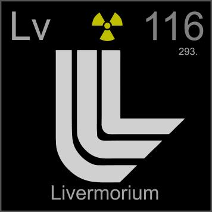

HOME
PREVIOUS
NEXT

Livermorium
Atomic Weight: 293[note]
Density: N/A
Melting Point: N/A
Boiling Point: N/A
Livermorium is named for the Lawrence Livermore National Laboratory. Its discovery was claimed in 1999 but then retracted due to the evidence having been fabricated. It was discovered for real in 2000.